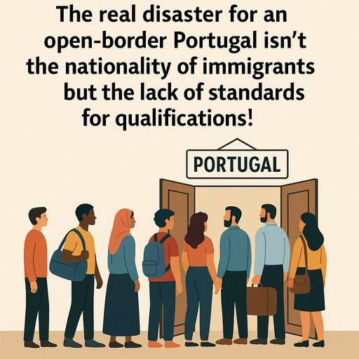

Publicado em 2025-06-29 21:27:32
Em Portugal, o modelo migratório parece ter sido desenhado por um gerente de discoteca com défice de atenção: portas abertas, entrada livre, dress code opcional e nenhum critério à entrada, desde que tragam um documento (ou nem isso) e um sorriso para a fotografia do SEF.
Não, o problema não é a nacionalidade. É a analfabetização qualificada do país. É receber fluxos migratórios sem critério mínimo de literacia, como se estivéssemos a recolher cartas Pokémon num leilão global de mão-de-obra barata — com o único objetivo de tapar buracos, sem pensar no que vem depois.
Porque daqui a 10 anos, quando a maioria destes recém-chegados não tiver lugar num mercado de trabalho que evolui para a automação, inteligência artificial e serviços especializados, o que sobra? Marginalidade? Subsídios? Frustração coletiva? Guetos urbanos com placas em quatro línguas e sem um livro à vista?
Portugal precisa de migrantes, sim. Mas de migrantes preparados. Com capacidade de adaptação, aprendizagem e literacia. Não podemos continuar a importar miséria para aliviar a nossa culpa colonial.
A imigração não pode ser um projeto de caridade estatal ou um plano desesperado para manter a segurança social a respirar por mais uns anos. Deve ser uma estratégia séria, com critérios objetivos, testes de literacia funcional e linguística, e integração planeada — e não uma espécie de "corrida ao ouro" onde qualquer um que chegue com passaporte e paciência ganha um cartão de residência.
Enquanto isso, os políticos aplaudem-se uns aos outros, dizem que “a diversidade é riqueza” — e de facto é — mas apenas quando é acompanhada de educação, esforço e ética de trabalho.
Se continuarmos a abrir as portas sem saber quem convidamos para jantar, não nos admiremos quando já não houver mesa, nem talheres, nem pão — e apenas se ouçam vozes indignadas a clamar por um futuro que deixámos escapar entre os dedos.
E acima de tudo, o esforço coletivo das últimas cinco décadas em Portugal, para democratizar o acesso à educação foi, sem dúvida, uma das maiores conquistas da nossa história recente. Reduzir o analfabetismo, massificar o ensino básico e médio, permitir o acesso ao ensino superior — tudo isso foi fruto de lutas políticas, investimento público e um pacto social silencioso por um país mais justo e com mais oportunidades.
Abrir as portas à imigração sem exigir um mínimo de literacia funcional é desvalorizar esse percurso histórico e empurrar o país para um abismo de desigualdade, precariedade e desorganização social, onde proliferam os trabalhos informais, a dependência de apoios sociais, e um novo ciclo de exclusão e pobreza — mas agora importado.
Não se trata de xenofobia nem de fechamento ao mundo. Trata-se de responsabilidade nacional, de proteger o tecido social e não hipotecar o futuro da educação, da cultura e da produtividade. A falta de exigência transforma o país num depósito de mão-de-obra desqualificada, num faroeste de exploração disfarçada de solidariedade.
Sim, Portugal deve acolher — mas com critérios, com planeamento, com visão estratégica. Porque a dignidade de quem chega também depende da exigência de quem os recebe.
Autor : Augustus Veritas
Publicado em Fragmentos do Caos · fragmentoscaos.eu